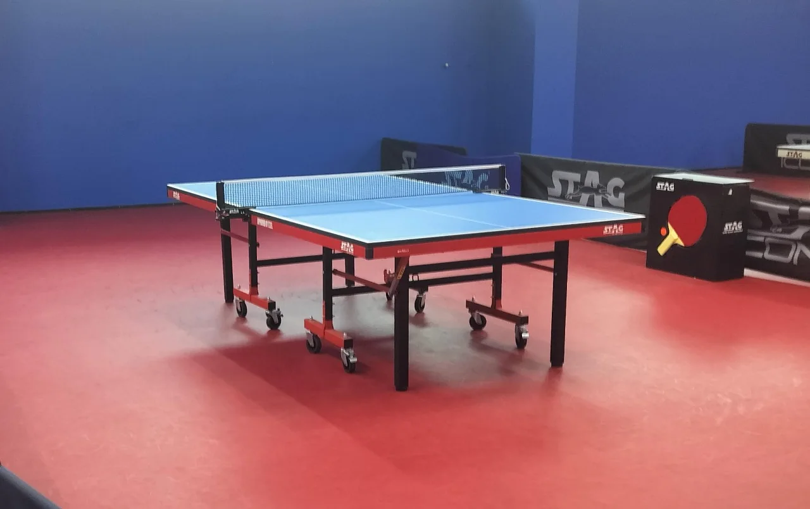
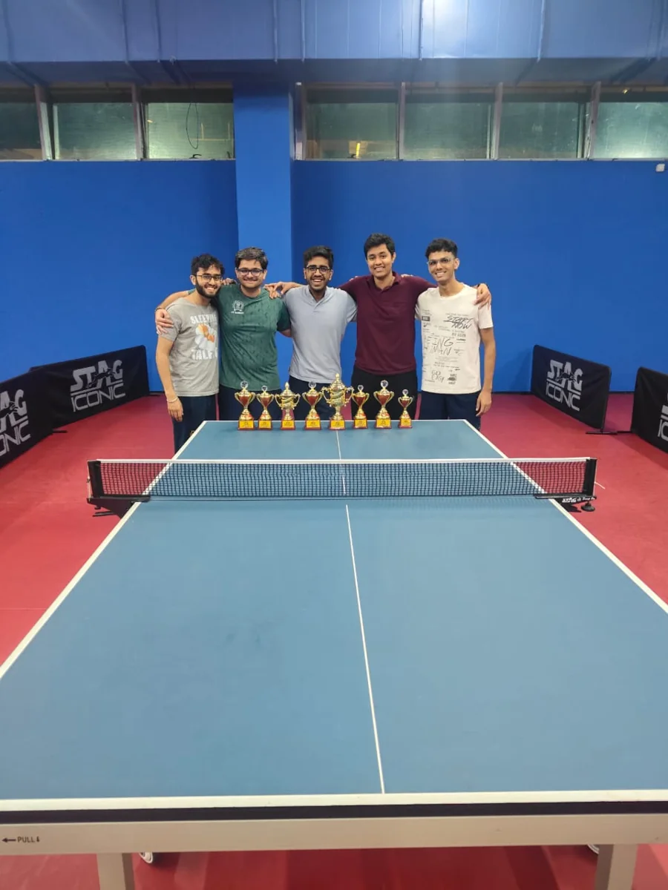
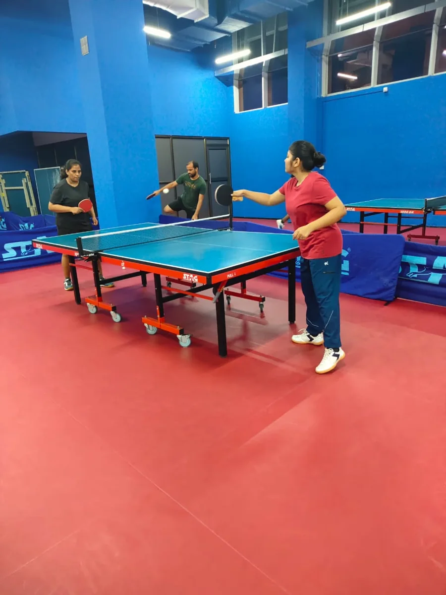

Eight Tables, AC Hall
- An air-conditioned court at the Gymkhana with 8 of the most widely used tables in the world, including the Stag Americas and Stag 1000Dx.
- Beginner-friendly rackets and balls provided through an issuance system.
A quick rally can turn into a regular game. Find out about the hall, practice equipment and institute activities, and contact the team about playing at your level.
Find your starting pointSpaces, equipment and practice.
Get to know what the sport offers.

Facility descriptions are from the institute’s October 2026 archive. Confirm current access, hours, equipment and coaching arrangements with the sports office.
Camps, institute competitions and ways to take part. Explore the activities described by the sports community.
These are archived activity descriptions, not upcoming fixtures. Ask the team about current dates, entry and eligibility.
Regular camps are held for beginners, intermediate, and advanced players, run by Coach Dhaval Karnik. Sessions focus on technique, strategy, and match play, welcoming players of all skill levels across the academic year.
Part of the Government of India’s National Sports Organization scheme, under which all incoming first-year IIT students sign up for a sport and undergo structured training. Table tennis sessions run through the semester under coaching staff at the Gymkhana hall.
Ask the sports office about the current status and arrangements.
Ask the sports office about the current status and arrangements.
Ask the sports office about the current status and arrangements.
Historical results from the institute’s published source, preserved with their original years.
Mens : Bronze
Mens : Winner
Mens : Winner
Mens : Silver
Mens : Silver
Ask the sports office for the current entry point and access arrangements.
Contact the sports officeAsk about getting started, current training, access or the right route into a team.
Contacts below are from the institutional snapshot of 18 October 2026. Confirm the current office-holder before reaching out.
Contact the sports officeTable tennis, on campus.
Photographs from the archive.


Another way to play
Volleyball ↗